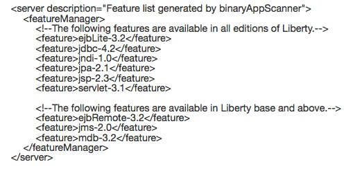

Quickly evaluate your application binaries for rapid deployment on Liberty or newer versions of WebSphere traditional. The tool identifies the Java EE programming models in the application and recommends the right-fit IBM WebSphere Application Server edition. The tool can also highlight any Java SE, Java EE programming model and WebSphere API differences.
The Migration Toolkit team is proud to announce enhancements to our binary scanner for your compiled application — the Migration Toolkit for Application Binaries!
What’s new this release?
The Migration Toolkit for Application Binaries generated migration report includes a new copy button to easily copy the generated server.xml feature list. In addition, a new --analyzeJavaSE option was added to scan application binaries for issues pertaining only to JavaSE migration.
A new rule was added to warn users migrating from WebSphere Application Server traditional V8.5.5 and earlier to WebSphere Application Server traditional V9.0 that applications that use both Java API for RESTful Web Services (JAX-RS) and Contexts and Dependency Injection (CDI) will require migrating from JAX-RS 1.1 to JAX-RS 2.0.
So what does it do, you ask?
The tool generates four kinds of reports in two possible formats – HTML or JSON. The tool also generates a Liberty feature list configuration file in XML format.
The Application Migration Report is a consolidated migration report that contains the content of the Application Evaluation Report, the Application Inventory Report, the Detailed Migration Analysis Report, and the Liberty feature list configuration. The beginning of the report contains a technology evaluation summary, which indicates which IBM platforms support the technologies used by the application, and a rule severity summary that shows how many rules and rule results are flagged for each rule severity. The default report shows migration results for migrating from WebSphere Application Server V8.5.5 and Java SE 6 to Liberty and Java SE 8. You should modify the source and target options to fit your migration scenario. The Application Migration Details section of the report contains a section corresponding to each of the individual actions.
The Application Evaluation Report identifies the Java EE programming models in the application and provides a recommendation for the right-fit IBM WebSphere Application Server edition.
The Application Inventory Report contains a high-level inventory of the content and structure of each application, plus information about potential deployment problems and performance considerations. The report includes a dashboard that reports the number and types of archives found. The counts of Java Servlets, JSP files, JPA entities, EJB beans, and web services are reported per application as well as in an overall summary. For each archive, the Java EE module type and version are included. And for utility JAR files, the contained packages are reported up to and including the third sub-package.
The Detailed Migration Analysis Report highlights any Java SE, Java EE programming model and WebSphere API differences between versions of WebSphere Application Server traditional, and between WebSphere traditional and Liberty. The report also highlights differences when migrating from JBoss, WebLogic and Apache Tomcat Application Servers to WebSphere traditional or Liberty. The report offers advice and potential solutions to assess the ease of moving applications to Liberty or to newer versions of WebSphere traditional. It also informs you of any Java EE specification implementation differences that could affect your applications. If you are moving an application to a cloud platform, the report offers additional advice, suggestions, and best practices to ensure that the application runs correctly in those environments.
The Liberty feature list configuration file is generated and includes all of the application required features needed in a Liberty server based on scanning each application binary. Use this file to configure your Liberty server by copying the content to the Liberty server.xml file, or use the include element to include it in the server configuration.
Who is it for?
Since this command-line tool does not require Eclipse, it is perfect for both administrators and developers using other IDEs. It is also great for evaluating applications whose source code has been misplaced or simply lost.
How do I use the Migration Toolkit for Application Binaries?
The tool is an executable jar file with one required parameter, the binaryInputPath, which is an absolute or relative path to a binary file or a directory that contains binary files. Run commands from the wamt directory in your Migration Toolkit for Application Binaries installation. For a complete list of supported actions, run the following command:
java -jar binaryAppScanner.jar --help
Generating the Application Migration Report
For a complete list of supported options for the consolidated migration report, run the following command:
java -jar binaryAppScanner.jar --help --all
To display the HTML report, run the following command:
java -jar binaryAppScanner.jar binaryInputPath --all

Generating the Application Inventory Report
For a complete list of supported options for application inventory, run the following command:
java -jar binaryAppScanner.jar --help --inventory
To display the HTML report, run the following command:
java -jar binaryAppScanner.jar binaryInputPath --inventory

Generating the Detailed Migration Analysis Report
For a complete list of supported options for detailed migration analysis, run the following command:
java -jar binaryAppScanner.jar --help --analyze
To display the default report, an HTML report for a migration from WebSphere Application Server traditional V8.5.5 to Liberty, run the following command:
java -jar binaryAppScanner.jar binaryInputPath --analyze

The report gives details about which rules were flagged for your application binaries. For each flagged result, the report lists the affected file along with the match criteria, the method name if applicable, and the line number if available. Line numbers are only available for results that occur within a method body.
Generating the Application Evaluation Report
For a complete list of supported options for evaluating your application, run the following command:
java -jar binaryAppScanner.jar --help --evaluate
To display the HTML report, run the following command:
java -jar binaryAppScanner.jar binaryInputPath --evaluate

To output the report to a file, additionally specify the --output parameter with or without a filename. For example, the following command outputs the report to an HTML file with the default name of TechnologyReport.html in the specified directory:
java -jar binaryAppScanner.jar binaryInputPath --output=/myReports
Generating the Liberty feature list configuration file
For a complete list of supported options for feature list generation, run the following command:
java -jar binaryAppScanner.jar --help --featureList
To generate the Liberty feature list configuration XML file, run the following command:
java -jar binaryAppScanner.jar binaryInputPath --featureList
{kind=link}

Use these files to configure your Liberty server by copying the content to the Liberty server.xml file, or use the <include> element to include it in the server configuration.
So what are you waiting for? Give it a try!
Get it now! Ask a question on Stack Overflow
The tools is great. We would also like to use it to check java code outside our WAS for migration from Java 7 to 8. Is there any way to make it scan JARs ?
Thanks !
You can use the --analyze action to scan a folder that contains JARs.
Can we generate Maven or Ant related dependencies using this report?
The binary scanner does not directly generate Maven or Ant related dependencies. You could use the featureList support to understand the Java EE technologies you are using to add some of the Java EE API dependencies. Also for Maven examples, see some of the sample.* repositories at https://github.com/wasdev. The sample repos have Maven and Gradle examples for building the projects.
This is a very useful and time saving tool. Just a quick question, we are planning to upgrade our WAS traiditional ND from 8.5.0 to 8.5.5.14 with the SDK from 1.6 to 1.8. While I see the input parameters for JDK version like ibm6 and ibm8, I dont see the options for –sourceAppServer to evauluate our 8.5.0 as was850.
Please suggest is there any way to tackle this.
I suggest using sourceAppServer=was80 and targetAppServer=was855, along with the necessary source/target Java options. This will ensure that any migration rules that apply to 8.5.5.x are included in the analysis.
Hi
Can we run this tool on both source/ binary? Does this evaluate migration of Portlets as well?
Thanks
Hello,
This tool is specifically for scanning your application binaries. It is able to detect everything that our Eclipse-based source scanner does. It scans XML documents, properties files, manifest files, JSP files, the bytecodes in the .class files and more.
As for Portlet migration, there is a migration rule when migrating to Liberty that looks for references to the javax.portlet packages, and for instances of the element in WEB-INF/portlet.xml. Here are some of the documentation links provided in the migration rule detailed help for Java Portlet:
Portlet Container: Differences between Liberty and full profile
Developing portlet applications with WDT and Liberty profile
Regards,
Cheryl
This is a very nice tool, but it would be great if I could specify output file / directory instead of using wamt/AnalysisReport.html or wamt/TechnologyReport.html
It also would be great if I could exlcude directories in ear/war files like lib dir (for external jars)
We appreciate your feedback very much. As for specifying the output file/directory for the report, simply use the –output option. You can specify a directory, a file name, or a fully qualified path/file name. For more information on the available options, use one of the following commands:
java -jar binaryAppScanner.jar –help –analyzeMigrationDetails
java -jar binaryAppScanner.jar –help –evaluateApplication
For your other comment, on the ability to exclude certain directories, we will take that into consideration for future enhancements.
[…] Migration Toolkit for Application Binaries (Tech Preview) Scans your application binaries without accessing the source code to quickly evaluate application binaries for rapid deployment on the WebSphere Application Server Liberty profile. […]